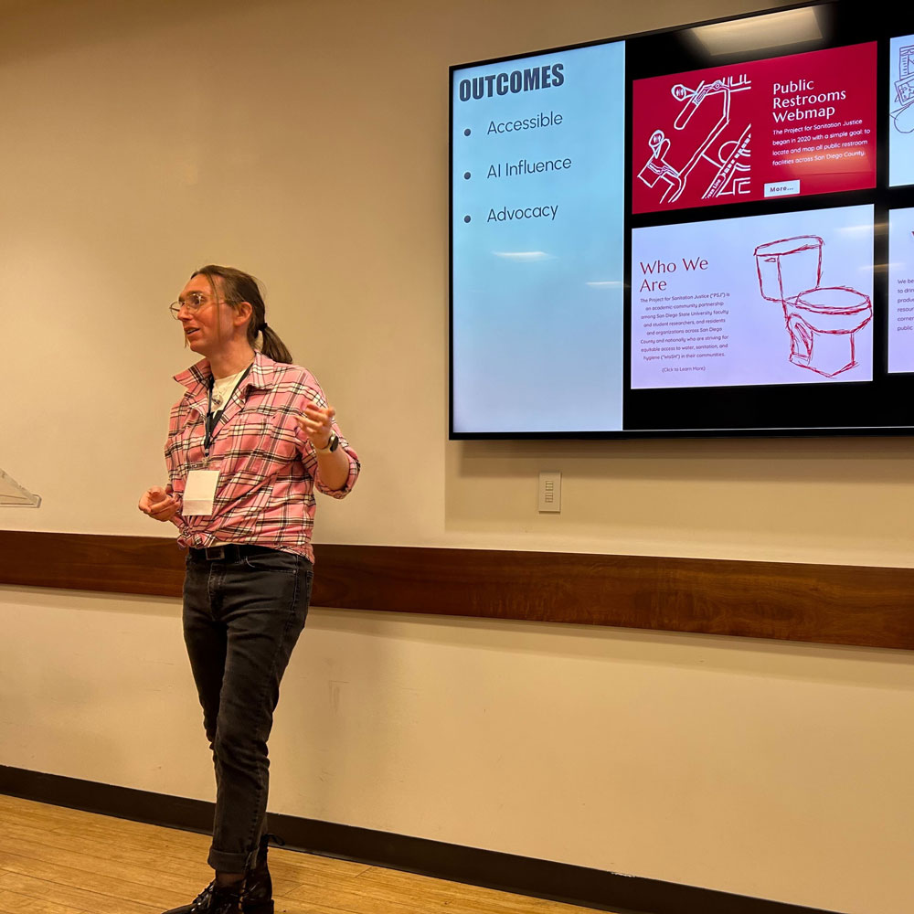

S3 Symposium Presentation at San Diego State University
A presentation pertaining to the communication of public health research to a general audience through a website.

Challenge
The Project for Sanitation Justice needs a 10-minute presentation to communicate to an audience of 26 people the benefits
of presenting their research on a website and the problems this approach solves.
Process
Collect documentation of website audit, design process, and performance analysis.
Research target audience and choose relevant talking points.
Organize information in Google Slides format using Problem, Process, and Solution format.
Present potential talking points to Lead Director for approval.
Recorded videos of practice sessions and adjust presentation time as needed.
Present information at San Diego State University’s S3 Symposium.
Conduct 5-minute Q&A session and receive feedback from judges.
Outcome
The presentation's multidisciplinary approach, central theme of dignity, and societal relevance made it innovative,
impactful, and highly engaging across academic and practical domains.
Multidisciplinary Understanding
The integration of topics such as AI, public health, UX design, communications, and disability justice generated an enormous
amount of appeal from a widely diverse audience.
Diversity in Action
People from a wide variety of backgrounds and fields are able to take away solutions relevant to their field.
Not Just Theoretical
Practical examples were presented which combined multiple viewpoints into a multifaceted real-world solution.
Keeping Our Points Simple
I highlighted the importance of well-structured webpages in order boost the visibility of research in search engine results.
Encouraged best accessibility practices such as high-contrast colors, alt text, and simple navigation to ensure research is available to all.
I Emphasized well-structured and organized content in order to influence Artificial Intelligence queries through best SEO practices.
I concluded by expressing how adhering to these best practices contributed to the success of the Project for Sanitation Justice as well as the expansion of the project into Eugene, Oregon.
Key Takeaways
Humanize the data
Associated with each data point is a story that deserves to be told, that will spur an audience into action.
A wide net cast for future collaboration.
Having clear, real-world examples of solved pain points empowers the audience to adapt your framework into theirs, fostering impactful collaborative opportunities.